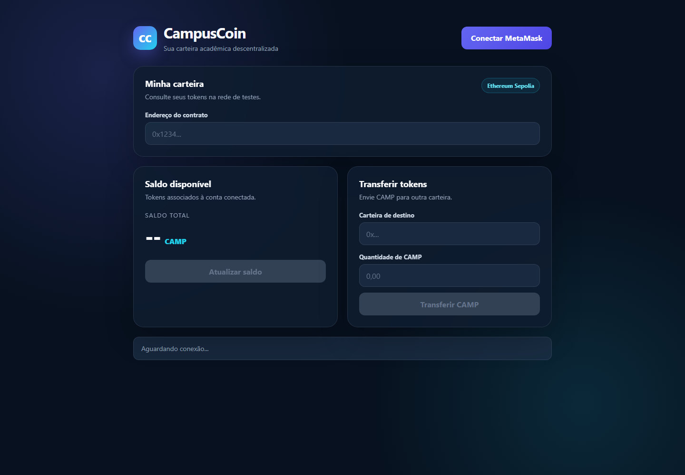

Disciplina: Blockchain, Smart Contracts e Web3
Professor: Bringel Filho
Integrantes: Filipe Lopes e Thiago Costa
Rede-alvo: Ethereum Sepolia
O CampusCoin é um token fungível desenvolvido em Solidity para demonstrar, em contexto acadêmico, os principais componentes de uma aplicação descentralizada: contrato inteligente, carteira digital, rede blockchain e interface Web3.
O projeto propõe uma moeda digital experimental para um ecossistema universitário. O token CAMP pode representar créditos acadêmicos ou pontos de participação, permitindo que estudantes e demais participantes recebam e transfiram unidades por meio de endereços Ethereum.
Além das operações fundamentais de um token fungível, a implementação inclui criação controlada de novas unidades (mint) e destruição voluntária de saldo (burn). O sistema foi preparado para execução na testnet Ethereum Sepolia, que permite testes sem utilizar ativos com valor financeiro real.
O supply inicial é de 1.000.000 CAMP, considerando 18 casas decimais. No construtor, o contrato registra o endereço que realizou o deploy como owner e executa _mint, atribuindo a totalidade do supply inicial a esse endereço.
O valor de totalSupply é dinâmico: aumenta quando o proprietário executa mint e diminui quando um detentor executa burn.
| Etapa | Destinatário | Quantidade | Regra |
|---|---|---|---|
| Deploy | Carteira do deployer/owner | 1.000.000 CAMP | Distribuição inicial automática |
| Mint posterior | Endereço informado | Definida pelo owner | Apenas o proprietário pode criar |
| Transferência | Qualquer endereço válido | Limitada pelo saldo | Iniciada pelo detentor |
| Burn | Endereço zero | Limitada pelo saldo | Reduz o supply total |
A arquitetura segue um modelo cliente–blockchain. Não há backend centralizado: o navegador acessa o contrato por meio do provedor injetado pela carteira MetaMask.
O arquivo frontend/index.html define a apresentação, enquanto frontend/app.js contém a integração Web3. A biblioteca ethers.js cria um BrowserProvider a partir de window.ethereum, obtém o assinante e instancia o contrato usando endereço e ABI.
A carteira controla a chave do usuário e solicita autorização para conectar a conta. Consultas de saldo são chamadas de leitura e não consomem gas. Transferências alteram o estado da blockchain, portanto exigem assinatura e ETH Sepolia para pagar gas.
O arquivo contracts/CampusCoin.sol concentra as regras do token. A blockchain mantém os saldos e eventos de forma replicada e verificável. O contrato usa Solidity ^0.8.20 e não depende de bibliotecas externas.
| Camada | Responsabilidade | Tecnologia |
|---|---|---|
| Apresentação | Entrada de dados, saldo e feedback ao usuário | HTML/CSS |
| Integração | ABI, conversão de unidades e envio de chamadas | JavaScript + ethers.js 6.13.2 |
| Carteira | Conta, rede, assinatura e confirmação | MetaMask |
| Negócio | Supply, saldos, transferências, mint e burn | Solidity |
| Persistência | Estado e histórico imutável das transações | Ethereum Sepolia |
O contrato implementa as operações essenciais esperadas de um token fungível: metadados, supply, controle de saldo, transferência, aprovação e transferência delegada.
constructor() {
owner = msg.sender;
_mint(msg.sender, 1_000_000 * 10 ** uint256(decimals));
}
function transfer(address to, uint256 amount) external returns (bool) {
_transfer(msg.sender, to, amount);
return true;
}
| Requisito | Aplicação no contrato |
|---|---|
constructor | Define o owner e gera o supply inicial. |
mapping | Armazena saldos e allowances por endereço. |
require | Verifica proprietário, saldo, allowance e endereços. |
| Funções públicas/externas | Expõem consultas e transações do token. |
| Eventos | Transfer e Approval registram operações. |
Cria novas unidades, aumenta o supply e credita o destinatário. O modificador onlyOwner restringe a operação ao deployer.
Remove unidades do saldo de quem chama a função e reduz o supply total. A validação impede queima superior ao saldo.
O compilador Solidity 0.8 possui verificação nativa de overflow e underflow. As transferências rejeitam o endereço zero e saldo insuficiente. Para uso em produção, seria recomendável adotar uma implementação ERC-20 amplamente auditada, testes automatizados e mecanismos de transferência ou renúncia de propriedade.

A tela organiza a interação em três áreas: configuração da carteira e contrato, saldo disponível e formulário de transferência. Os botões transacionais permanecem desabilitados até que a carteira seja conectada.
O frontend valida os endereços com ethers.isAddress, converte CAMP para a menor unidade com ethers.parseUnits e aguarda a confirmação por meio de tx.wait(). Após uma transferência confirmada, o saldo é atualizado.
O deploy está planejado para a Ethereum Sepolia por meio do Remix IDE e MetaMask. A carteira do deployer deve possuir ETH Sepolia para custear a publicação do bytecode.
O custo de qualquer transação é calculado por gas utilizado × preço do gas. Como o preço varia conforme a rede, os valores abaixo são referências técnicas, não comprovantes de execução.
| Operação | Faixa indicativa | Exemplo a 2 gwei |
|---|---|---|
| Deploy do contrato | ≈ 900.000–1.300.000 gas | ≈ 0,0018–0,0026 ETH Sepolia |
| Transfer para saldo novo | ≈ 45.000–55.000 gas | ≈ 0,00009–0,00011 ETH Sepolia |
| Consulta de saldo | Sem gas pago pelo usuário | Chamada local eth_call |
A medição definitiva deve ser extraída do recibo da transação no Etherscan após o deploy e os testes reais.
| Rede | Ethereum Sepolia |
|---|---|
| Endereço do contrato | Pendente de deploy real |
| Hash da transação | Pendente de deploy real |
| Link Etherscan | Pendente de deploy real |
| Teste | Resultado | Evidência |
|---|---|---|
| Sintaxe do frontend | Aprovado | node --check frontend/app.js sem erros. |
| Elementos obrigatórios | Aprovado | Botões de conexão, saldo e transferência presentes. |
| ABI da interface | Aprovado | balanceOf, transfer e decimals definidos. |
| Regras do contrato | Inspeção concluída | Mappings, requires, constructor, mint e burn presentes. |
| Compilação Solidity | Pendente | Compilar no Remix com Solidity 0.8.20 ou superior. |
| Deploy e transações Sepolia | Pendente | Exige MetaMask, ETH Sepolia e confirmação do usuário. |
CampusCoin.sol no Remix;O CampusCoin demonstra os fundamentos de um token fungível e sua integração com uma interface Web3. A solução cobre metadados, supply, saldo, transferências, permissões, mint e burn, além de conexão MetaMask, consulta de saldo e envio de tokens. A etapa restante para concluir a validação de ponta a ponta é o deploy real na Sepolia e o registro das evidências on-chain.